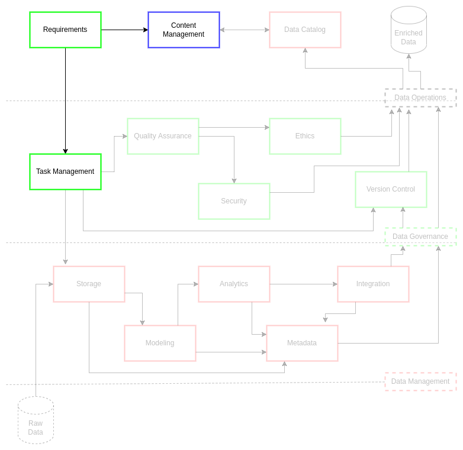

Requirements
Contents
Requirements¶
In modern data work, it is imperative that decisions about, and for, data solutions be clearly defined. This definition clarification ensures that a customer is optimizing their infrastructure and data worker resources for rapid results and maximized return on investment (ROI). In order to realize these results and ROIs, certain practices must be available to the data team to clearly guide the requisite processes towards desired outcomes.
Data products are predicated upon a cycle of eliciting answers on the actual problematic and documenting this process to ensure precision1 throughout a given project for process lineage. This cycle will lead to selection and development of the most appropriate data models and data processes: not those that are simply desired or initially proposed. This differentiation is critical for on-going data practice improvements. Since data practices must be persistently analyzed and adjusted for validity and applicability within a given combination of project scopes, models, and data, requirement refinement must be the first step in a data project. This initial step will ultimately lead to improved quality and efficiency for data products and services.
This requirements guide is a simplified approach for requirements adapted from Agile developer operations (DevOps)2 and data-focused program management (PM)3. The rationale and objectives that follow are rooted in the practices of identifying errors in thought and processes while outlining risks associated with a given data-oriented approach. This supports parallel data operations efficiencies such as clear task management for personnel, accurate and precise documentation practices, and continuous version control of models, metadata, and data lineage.
Challenge¶
Failure to gather requirements can be detrimental to data project success. As a result, there are several reasons why you would want to focus on gathering the best requirements possible prior to starting data work. First, requirements improve communication on data challenges between stakeholders. This critical step will define clear problem statements in a two-step process to refine requirements (e.g., a request of engineering and a review of the request to define requirements). Second, requirements help delineate task delegation. Requirements help data team leadership in assignment of tasks, definition of timelines, and delivery of high-quality data products. Task delegation optimizes data tasking by reducing duplicate efforts. Third, requirements help scope task shift costs. Metrics and tracking of resources is critical in any data environment, spanning across various system architectures. Refinement of requirements is a key step in evaluation of support and resources in a manner that is cost effective and systemically streamlined. Fourth, clear requirements make space for your data team to truly innovate. The data team is frequently confronted with several technical and systemic challenges. Consolidating and optimizing requirements creates space and time to permit talented professionals to innovate around key challenges for project stakeholders.
Goals¶
Rapid response to project data requirements
Enhance requirements documentation and metrics
Reduce duplication of efforts
Enhance data team integration
Improve & consolidate requirements taxonomy
Defining Requirements¶

The following practices are intended to be adaptable, iterative cycles for requirement refinement. This ensures the data products are clearly defined and as a result, delivered in a timely manner to a high-standard of quality and security.
Roles¶
In the course of the requirements process, there are key roles that aid the facilitation of data resources from data operations to project management.
Science & Methods
Analytics
Program Management (PM)
Data Management (DM)
Data Engineering (DE)
Conceptualization¶
Roles
Customer
Program Management
Science & Methods
Analytics
The first step in this process is to iteratively generate a sufficient, valid set of requirements. The customer and PM will work to facilitate the context and intent of the problem to be addressed. This involves coordination with the science & methods and analytics teams to solidify the context and intent into a well defined list of concepts and outcomes. All parties involved in a project will then coordinate the details of the requirements through a workshop. The science & methods teams will begin the drafting of the request for engineering (RFE) template. The workshop and template drafts will establish a tentative course of action towards a finished draft of the requirements.
Request for Engineering¶
Roles
Science & Methods
Data Engineering
Once requirements are conceptualized, science & methods will bring their RFE template to the data engineering team to clarify understanding of the requirements. Once all requirements are clear, DE will outline tasks and timelines for data delivery for the requirements. Science & Methods and DE will triage each task and timeline to optimize priority and to solidify the delivery schedule. Science & methods will pass any issues or concerns pertaining to requirements back to the conceptualization phase based on technology, personnel, or other restrictions within DE. Finally, science & methods and DE will agree to the final short form draft, leading to review and task assignment by DM.
Review and Tasks¶
Roles
Data Engineering
Data Management
With a completed and verified RFE, DE and DM can perform a final review. DE will clarify the overall scope and justification of the requirements to DM for data services. DE will also elaborate on any questions or concerns DM has regarding the deliverables and deadlines, possibly prompting further discussion with science & methods. DE and DM will review the resources and materials required as well as the personnel best suited to action DE tasks within deadline. Once all facets of the requirements are agreed upon, DM will then publish the official RFE. The task management system (TMS) will then be updated with tasks and DE personnel assignments to expected deadlines.
Approval and Execution¶
Roles
Data Management
Science & Methods
Program Management
Following publication of the official RFE and TMS assignments, DM will monitor progress. DM will coordinate updates as needed due to issues that may arise with deadlines or task complications. DM will monitor and plan for life cycle of data services as well as cataloging and archiving of data products, data models, and data mastering practices associate with the RFE.
RFE Addendums¶
For major RFE changes4, an addendum will be attached to the published RFE, ensuring shifts in the original RFE timelines and resources are recorded. These changes should come from science & methods via PM based on initial delivery from DM and DE or changes from the customer issued to PM. DM may also ask DS to review shifts in the RFE with science & methods to ensure the research model is valid.
RFE Cancellation¶
Projects may encounter changes or terminations in the course of the requirements or RFE process. In that case, DM will coordinate on the context and timeline of the cancellation. This assessment will lead to updates for the RFE (official and addendum) and TMS.
References¶
Number |
Reference |
|---|---|
1 |
Henderson. D., Earley, S., Sebastian-Coleman, L., Sykora, E., Smith, E. (Eds.). (2017). DAMA-DMBOK: Data management body of knowledge (2nd Ed.). Basking Ridge, NJ: Technics Publications. |
2 |
Atwal, H. (2020). Practical dataops: Delivering agile data science at scale. UK: Apress. |
3 |
Berkun, S. (2008). Making things happen: Mastering project management. Sebastopol, CA: O’Reilly Media Inc. |
4 |
Major and minor changes have yet to be defined: data management will be the authority for defining these terms based on inputs from knowledgeable data engineering personnel. |